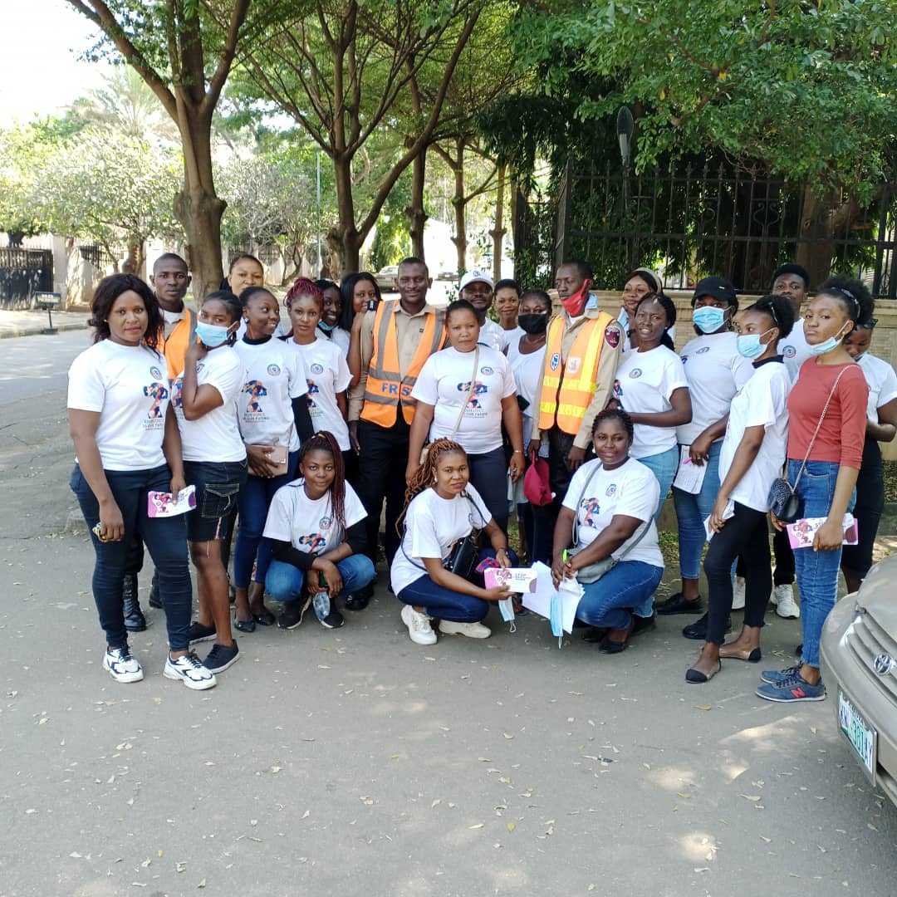

Technology • Inclusion • Opportunity
Technology • Inclusion • Opportunity
Featured project
Girls in ICT Club & TechWomen
We ensure a more inclusive, sustainable and tech-driven future for women and girls in ICT by bridging the digital divide and promoting gender equality.
WHSF has empowered more than 550 young women through technology education, entrepreneurship, career development, mentorship and global networking opportunities, while 7,500+ girls have been impacted through WHSF technology initiatives and education programmes. Our holistic approach helps girls and young women build confidence, develop practical skills and access pathways into innovation, enterprise and employment.
View all programmesImpact stories
Stories of technology changing lives.
Behind every class, device, certificate and mentorship moment is a learner gaining confidence, practical skills and a clearer pathway into education, enterprise and work.

Girls in ICT Club
Digital confidence for girls
Learners gain practical exposure, recognition and confidence to keep exploring technology.

STEM in action
Hands-on learning
Robotics, automation and STEM activities help young people see technology as achievable.

Community learning
Access closer to home
Community-based learning creates safer pathways for women, youth and rural learners.
Find your WHSF path
Tell us what you need, and we’ll point you in the right direction.
Whether you are a student, volunteer, mentor, donor, school, partner or certificate checker, choose the option that best describes you and get a clear next step.
Start or continue learning with WHSF e-learning.
Explore technology training in robotics, cybersecurity, drone technology, AI, STEM, eHealth and accessibility technology.
Who we are
Humanitarian ambition, grounded in practical action.
World Humanitarian Support Foundation (WHSF) is a technology-driven humanitarian nonprofit helping underserved communities access learning, innovation and opportunity. We use Artificial Intelligence, digital inclusion, STEM education and responsible technology to support sustainable development, community resilience and human dignity.
WHSF was established in the United States in June 2015 as a registered California nonprofit organisation and was subsequently registered in Nigeria in 2021. World Humanitarian Support Foundation has been in special consultative status with the United Nations Economic and Social Council (ECOSOC) since 2026.
Our mission is to empower underserved communities through Artificial Intelligence, digital inclusion, STEM education, accessibility, climate-smart innovation and responsible technology. We focus on practical learning that can improve education, agriculture, healthcare, youth employment, entrepreneurship and community wellbeing.
Technology is a catalyst for transformation when it is inclusive, ethical and useful. Through ICT programmes, AI education, robotics, cybersecurity, digital literacy, e-learning learning and mentorship, WHSF opens pathways into STEM careers, entrepreneurship, leadership and lifelong learning—especially for girls, women, young people and communities with limited access to opportunity.
Discover our programmes →Responsible technology for underserved communities
Empower communities through AI, digital inclusion, STEM education and sustainable development.
A future where technology expands opportunity
Girls, women, youth and underserved communities using innovation to learn, lead and thrive.
UN SDGs and AI for Good
Our mission supports inclusive learning, responsible innovation, digital equity and shared prosperity.
Our programmes
Skills, confidence and opportunity.
Our technology and education programmes help girls and young women participate, lead and build solutions for their communities.

2026
Girls in Agriculture & Climate-Smart Technology
A climate-focused, gender-responsive programme equipping rural and peri-urban girls aged 12–24 with practical skills in climate-smart agriculture, sustainability and applied technology.
Experience
2025 Tech Excursion - Robotic Automation
Girls in the ICT Club and TechWomen explore robotic automation, AI detection and tracking, and autonomous VTOL technology through practical exposure.

Opportunity
Scholarship Award
WHSF’s partnership with the Center for Project Innovation in Washington, D.C. has supported ten scholarship awards and widened access to professional development opportunities.

STEM
Robotic Programme
Hands-on robotics classes help girls build confidence, explore engineering concepts and develop practical problem-solving skills in STEM fields.

Drone Tech
Drone Tech Programme (DTP)
WHSF uses drone technology to bring un-educated and out-of-school girls from rural communities back into learning. The programme contributes to WHSF’s wider impact of reaching more than 7,500 girls across Nigeria and other African countries through practical technology and education programmes.

Digital Inclusion
ICT Girls Club
WHSF promotes girls’ participation in ICT by creating safe learning spaces, mentorship pathways and opportunities for practical digital literacy.
Community impact through technology
Drone & Robotic technology is helping rural girls find their way back to school.
WHSF introduces drone technology as a practical bridge between curiosity, education and opportunity for girls in rural communities.
Through demonstrations, hands-on learning, entrepreneurship exposure and mentorship, WHSF encourages un-educated and out-of-school girls to return to learning, build digital confidence and see a future for themselves in STEM, enterprise and meaningful work.
7,500+
girls impacted through WHSF technology and education programmes
550+
Young women empowered through entrepreneurship, mentorship, networking and job-opportunity pathways around the world.
Community impact through technology — WHSF Drone Tech Programme
Technology for education, confidence and opportunity
WHSF Innovation
Technology should improve lives—not leave people behind.
Our innovation work explores how responsible AI and accessible digital services can support sustainable organisations and better human experiences.
Visit WHSF SmartStay
Smart tourism • Accessibility • Sustainability
AI4Hospitality
WHSF SmartStay
A smarter way to manage sustainable and guest-centred hospitality.
EnergyTrack
WaterMeasure
AccessImprove

Technology for humanity · 1 / 10
We impact lives through technology.
Empowering underserved communities across Africa through Artificial Intelligence, digital inclusion, STEM education, and responsible technology for sustainable development.
AI for Good • Digital inclusion • STEM education • Responsible technology • Sustainable development
Explore technology programmes
Open e-learning
View impact dashboard
Verify certificate
Employee Verification
Take part
There is a place for you in this work.
Partner
Build programmes, pilots and long-term collaborations with WHSF.
Start a conversation →Volunteer
Contribute your time, experience and ideas to meaningful initiatives.
Register your interest →Support
Help humanitarian and community-led work reach more people.
Support our mission →Connect with WHSF
Let’s turn shared values into meaningful action.
Contact WHSF for partnership, volunteering, e-learning support, certificate help, programme enquiries, safeguarding concerns or responsible innovation.
Head Office11535 Western Ave
Torrance, CA 90501
United States Africa Head OfficeNo. 5 Akinyemi Avenue
Mobil Ring Road, Ibadan
Nigeria info@worldhsfoundation.org
Torrance, CA 90501
United States Africa Head OfficeNo. 5 Akinyemi Avenue
Mobil Ring Road, Ibadan
Nigeria info@worldhsfoundation.org
Fraud awareness
Scammers have misused the WHSF name, logo and images to create fraudulent Facebook pages and WhatsApp groups. WHSF is not offering financial promotions. Please report suspicious activity to your local authorities.
Partners and collaborators
Working with organisations that expand opportunity.
These partner and programme logos were migrated from the current WHSF website so the new portal reflects the foundation’s existing collaborations and programme ecosystem.